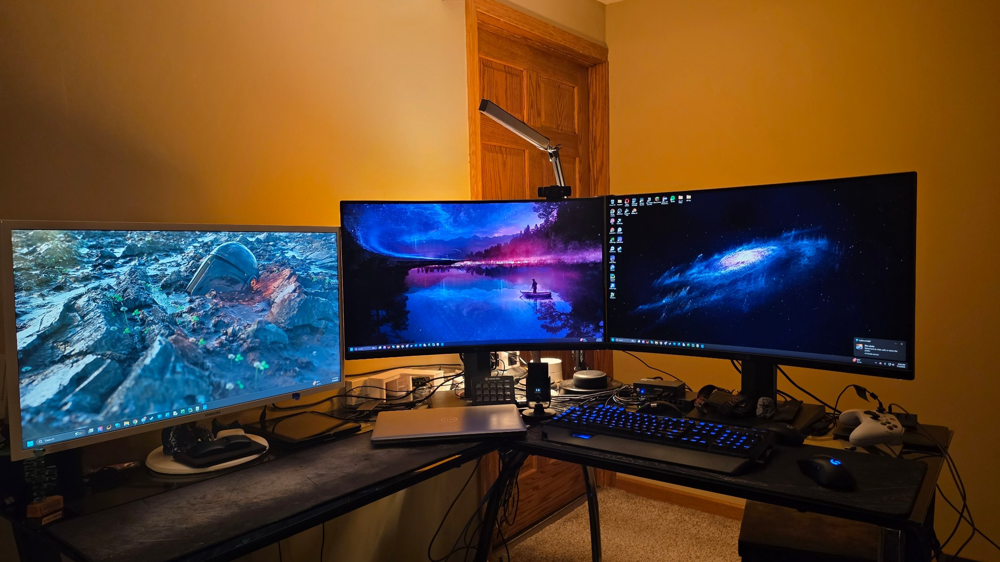

My Current Tech Setup
Computer Specifications
- CPU: Intel i9 12900KF
- GPU: GeForce RTX 3080
- RAM: Corsair Vengeance DDR5 5200 Hz 32 GB
This may be overkill on the performance but I use it for 3D modeling, gaming and virtualization.
My Server

I have a server that runs Sunlight for remote access. This allows me to work on my server from anywhere using Moonlight, and I can also remotely start 3D prints or remotely game on my phone.
I run SyncThing on all my devices. This allows me to sync my files between all devices anytime they are online, so I have access to all my homework files at any time on any device.
Plex is also installed to allow my media to be easily accessed. This is nice if I lose internet connection because having a show downloaded allows me to watch seamlessly.
Misc
I recently switched to a Samsung Fold 7 from an iPhone 11. This switch to Android has allowed for much more integration into my home setup.
There is a Raspberry Pi setup as a network ad and malware blocker.
I have also recently added a KVM to my setup to allow seamless changes from my work laptop to my personal desktop on the same setup.